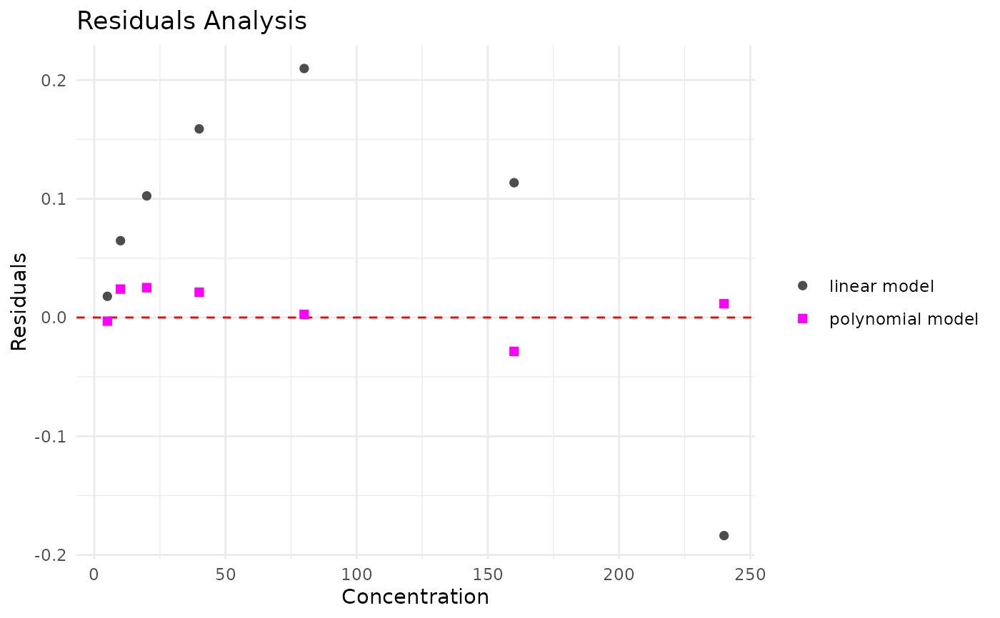
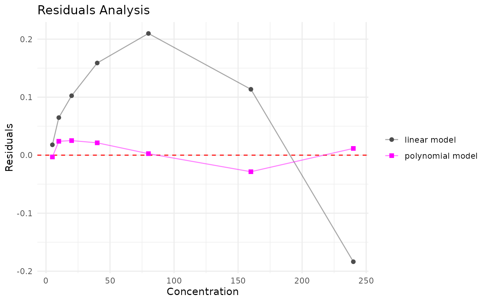

Plot residuals of linear vs. polynomial models for one curve
Source:R/model_choice.R
plot_residual_comparison.RdCompares how each model's residuals scatter around zero across the range of concentrations, for one standard curve. Residuals close to zero with no systematic pattern indicate a good fit; a curved or systematic pattern (typically in the linear model's residuals, when a polynomial fit is actually needed) is a sign that model doesn't capture the true shape of the curve.
Arguments
- curve_data
A tibble with data for the curve, with the column referenced by
conc_col. Must be the same data used to fitmodels(same row order/count) — e.g. viafit_curve_models(). Note: ifcurve_datacontains rows withNAin the fitted value/concentration columns,lm()silently drops them, which can misalign residuals againstcurve_data's concentration values here. Not currently guarded against — worth keeping curve data free ofNAs in the relevant columns.- models
A named list with
linearandpolyelements, each anlmmodel object — typically the output offit_curve_models().- conc_col
Name of the column containing concentration. Defaults to
"std_conc".
Examples
curve <- std_corrected_TDN |>
dplyr::filter(unique_curve_id == unique(std_corrected_TDN$unique_curve_id)[9])
models <- fit_curve_models(curve)
plot_residual_comparison(curve, models)

# add a connecting line between points, e.g. useful when reviewing
# several curves at once (see review_model_choice())
plot_residual_comparison(curve, models) + ggplot2::geom_line(alpha = 0.5)
